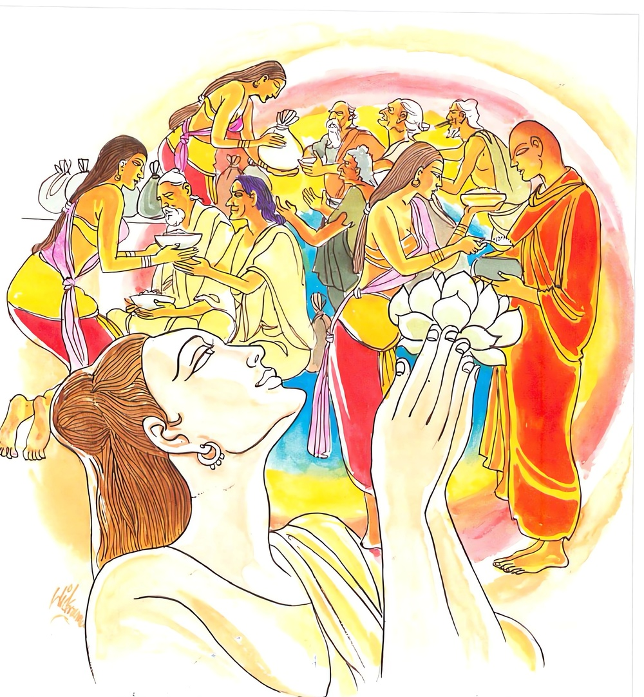

9-3 තුන්වන ලාජදෙව් දුවණියගේ වස්තුවයි.
මෙම කතාව සද්ධර්ම සාගරයෙන් ද කියවන්න.
පුඤ්ඤං චෙ පුරිසො කයිරා කයිරාථෙතං පුනප්පුනං
තම්හි ඡන්දං කයිරාථ සුඛො පුඤ්ඤස්ස උච්චයො.
පුරුෂ තෙම ඉදින් දානාදි එක්තරා කුශල කර්මයක් එක් වරෙක ද කෙළේ වී නම් එය නැවත නැවැත ද කරන්නේ ය. ඒ කුශලයෙහි ආලය රුචිය කරන්නේ යි. කුමක් හෙයින් ද? යත්: දානාදි කුශලයාගේ රැස් කිරීම (යම් හෙයෙකින් සඟමොක් සැපතට කාරණ ද එහෙයින්) සුව යි.

පුඤ්ඤං චෙ ආදි මේ ධර්මදේශනාව බුදුරදුන් දෙව්රම වාසය කරද්දී ලාජ දෙව්දුව අරභයා දේශනා කරනලදි.
මෙහි මුල්කථාව රජගහ නුවරදී උපන්නකි. ආයුෂ්මත් මහා කාශ්යපතෙරණුවෝ පිප්ඵලී ගුහාවෙහි වාසයකරන කාලයෙහි ධ්යානයට සමවැදී සත්වෙනි දින එයින් නැගිට පිඬු පිණිස හැසිරීමට සුදුසු තැනක් දිවඇසින් බලවිට එක් හැල්කෙතක පාලිකාස්ත්රියක් හැල්වීකරල් නෙවුත් විලද කරනු දැක, ඈ සැදැහැවත්ද නැද්දැයි බලා සැදැහැති බවත්, ඈ මට සංග්රහයක් කිරීමට සුදුසු තත්ත්වයක සිටින්නීදැයි බැලූවිට, ඈ විශාරදවූ කුලදුවක් බවත් දැන, තමන්ට සංග්රහ කරනබවත් එයින් මහා සම්පතක් ලබනබවත් දැන, සිවුරුපොරවා පාත්රයක් රැගෙන හැල්කෙත ළඟට වැඩමවූහ.
ඒ කුලදුව තෙරුන්දැක පැහැදී පස්වණක් ප්රීතියෙන් පිනාගිය සිරුරු ඇතිව, ස්වාමීනි, වැඩහිඳිනු මැනවැයි කියා විලඳ ගෙනවුත් තෙරුන්ගේ පාත්රයෙහි දමා පසඟ පිහිටුවා වැඳ ස්වාමීනි, ඔබ අවබෝධකරගත් ධර්මය ලබාගැනීමට සුදුසු කෙනෙක් වෙම්වායි ප්රාර්ථනා කළාය. එය එසේම වේවායි තෙරණුවෝ අනුමෝදනා කළහ. ඈද තෙරුන් වැඳ තමන් දුන් දානය ගැන සිතමින් නැවතුණාය.
ඇගේ කුඹුරු සීමාවට යන මගෙහි එක් ගස් බෙනයක ඝෝර විෂ ඇති සර්පයෙක් සිටියේය. කසාවතින් වැසුණු තෙරුන්ගේ කෙණ්ඩ දෂ්ටකිරීමට සර්පයාට නොහැකිවිය. අර තැනැත්තී දුන් දානය ගැන සිහිකරමන් නැවතිනැවතී අවුත් ඒ ප්රදේශයට පැමිණියාය. සර්පයා බිලයෙන් පිටවී අවුත් ඈ දෂ්ටකොට එතැනම හෙළුවේය. ඈ පැහැදුණු සිතින්ම මිය පරලොව ගොස්, තිස්යොදුන් පමණවූ තව්තිසා භවනයෙහි සියලු ආකාර ඇඳුම් පැළඳුම්වලන් යුක්තව, නිදා පිබිදියාක් මෙන් උපන්නාය. ඈ දොළොස් යොදුන් පමණවූ එක් දිව්ය වස්ත්රයක් ඇඳ එකක් පෙරවාගෙන දිව්යාප්සරාවන් දහසක් පිරිවරා පෙර කළ පින්කම් කියනු පිණිස රන්වන් විලඳවලින් බරවූ එල්ලෙන්නාවූ රත්නමය භාජන සහිතව විමාන දොරටුවෙහි සිට තම සම්පත් දැක, කිනම් පිනක් කිරීමෙන් මේ සම්පත ලැබුවේදැයි දිවැසින් බලා, ආර්යවූ මහාකාශ්යප හිමියන්ට මවිසින් දෙනලද විලඳදානයෙනියි දැනගත්තාය.
මෙතරම් කුඩා පරිත්යාගයකින් මා මේසා විශාල සම්පතක් ලබා දැන් පමාවීම නුසුදුසුය. ආර්යයන්වහන්සේට වත්පිළිවෙත් කොට මේ සම්පත් ස්ථාවර කරගන්නෙමියි සිතා උදෑසනම රත්රන්මුවා මුසුනක්ද කසළ ඉවත්කරන භාජනයක්ද ගෙන තෙරුන්ගේ ගෙමිදුල හැමද බීමටත් පරිහරණයටත් අවශ්ය ජලය සපයා තැබුවාය. තෙරණුවෝ ඒවා දැක කිසියම් ළමයෙකු විසින් කරන්නට ඇතියි සිතාගත්තෝය. ඈ දෙවෙනි දවසේත් එසේ කළාය. තෙරණුවෝ එදවසත් එසේම වන්නට ඇතියි සිතූහ. තුන්වෙනි දිනයෙහි තෙරණුවෝ ඇගේ හැමදීම් හඬ අසා, යතුරුසිදුරු හෝ තල්කොළ වැටවල සිදුරු ආදියෙන් ආ ශරීර ආලෝකය දැක දොරහැර මේ අමදින්නේ කවුරුන්දැයි ඇසූහ. ස්වාමීනි, ඔබවහන්සේගේ උපස්ථායිකාවක්වූ ලාජදෙව්දුවවූ මමයයි කීවාය. මට මේනමින් උපස්ථායිකාවක් ඇතිබව මතකනැතැයි කීහ.
ස්වාමීනි, මම ඇල්කෙත රකිමින් විලඳ දන් දී ප්රීතියෙන් සිටින අවස්ථාවේ සර්පයකු දෂ්ටකර තව්තිසාවෙහි උපනිමි. මම මේ සම්පත් ලැබුවේ ආර්යයන් වහන්සේ නිසාය. දැනුත් ඔබවහන්සේට වත්පිළිවෙත්කොට සම්පත් ස්ථාවරකර ගන්නෙමියි ආවෙමි. ඊයේත් පෙරේදාත් මෙතැන හැමදියේ තී විසින්ද? පානීය පරිභෝජනීය පැන්ගෙනාවේත් තී විසින්ද? එසේය ස්වාමීනි. දෙව්දුව මෙතනින් පහවයව. තී විසින් කළ වතාවත් එසේම වේවා, මෙතැන් පටන් මෙතැනට නොආයුතුය. ස්වාමීනි, මා නොනසනසේක්වා, ඔබවහන්සේට වතාවත් කර මගේ සම්පත් ස්ථාවරකර ගැනීමට අවසර දෙනුමැනවි. දෙව්දුව පහව යව. අනාගතයේදී විජිනිපත් රැගෙන ධර්මාසනයෙහි වැඩ සිටින ධර්මකථිකයන් විසින්, මහාකාශ්යප තෙරුන්වහන්සේට එක් දේවතාදුවක් අවුත් වතාවත්කොට පානීය පරිභොජනීය පැන් ගෙනවුත් උවටැන් කරන ලදැයි කීමට කථාවක් නොතැබිය යුතුයයි කීහ. දැන් මෙතනින් යව. මින්පසු මෙහි නොඑවයිද කීහ. ඈ, අනේ ස්වාමීනි, මා නොනැසුව මැනවැයි යළියළිත් ඉල්ලා සිටියාය. තෙරණුවෝ මෑ මගේ වචනය අසන්නේ නැතැයි සිතා, තීගේ ප්රමාණය තීම දැනගනුවයි අසුරුසණක් ගැසූහ. ඈ එහි සිටිනු නොහැකිව අහස උඩට පැන ඇඳිලි බැඳගෙන සිට, ස්වාමීනි, මා ලත් සම්පත නොනැසුව මැනව, එය ස්ථාවර කර ගැනීමට ඉඩදෙන්නැයි හඬමින් වැළපෙමින් අහසෙහි සිටියාය.
ශාස්තෘන්වහන්සේ දෙව්රම ගන්ධකුටියෙහි වැඩසිටින ගමන්ම ඈ අඬන හඬ අසා ආලෝකයක් යවා දෙව්දුව ඉදිරියෙහි වැඩහිඳගෙන කථා කරන්නාක් මෙන් දෙව්දුව, මා පුත් කාශ්යපතෙරණුවන්ට සංවරවීම භාරය. පින් කැමති අයට මේ මේ දෙය අර්ථවත් යයි සලකා පින්කිරීම භාරය. පින්කිරීම මෙලොවටත් සැපම ගෙනදේයයි අනුසන්ධි ගළපා දහම් දෙසමින් මේ ගාථාවද වදාළහ:
පින් කළහොත් කවුරු හෝ
එය යළිත් කළයුතුමවේ
එයට රුචි කළයුතු
පින් රැස් කිරීමෙන්
සැපත හැමවිට ළංවේ
එහි අර්ථය නම්, පුද්ගලයා පින් කරන්නේ නම්, එක් වරක් පිනක් කොට මම පිනක් කෙළෙමි දැන් ඉතින් මේ ප්රමාණවත්ය කියා එතැන් පටන් එහි නොඇළී නොසිට යළියළිත් පින් කළයුතුම වේ. පිනක නොයෙදන විටක වුවත් කළ පින් ගැන රුචියත් උත්සාහයත් කළයුතුම වේ. කුමක් නිසාද? සුඛො පුඤ්ඤස්ස උච්චයො පින් රැස්කිරීම, එහි වර්ධනය මෙලෝ පරලෝ සැප ගෙන දෙන බැවින් සැපයක්ම වන හෙයිනි.
දේශනාවසානයෙහි දෙව්දුව සතළිස්පස්යොදුනක් උඩ සිටම සෝවාන්ඵලයට පැමිණියාය.